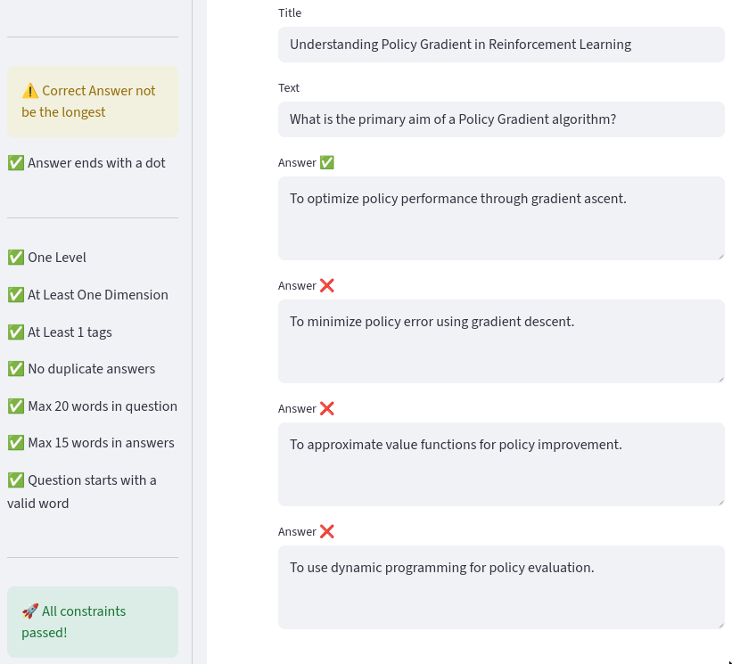

🏛️ Université de Montpellier × BionomeeX × Numalis
AICET — Artificial Intelligence Competency Evaluation Test
AICET is a large-scale national project aiming to
create the first
official AI certification test for professionals in France.
Led by the Université de Montpellier with key
partners BionomeeX and Numalis,
the project combines academic rigor, industrial validation, and
AI-assisted content generation to build a standardized benchmark for
AI literacy and technical skills.
Large Language ModelsOntologyQuestion GenerationPythonFastAPIData QualityMulti-Validation WorkflowPipeline Engineering
🎯 The Objective
The goal of AICET is to design a
trusted, standardized AI test assessing the
competencies of engineers, researchers, and professionals working
with artificial intelligence. The test must cover the full spectrum
of AI knowledge — from ethics and data governance to algorithmic
principles, coding, and model evaluation — while maintaining high
scientific integrity.
To achieve this, the consortium developed an
automated question generation and validation pipeline
capable of producing and filtering thousands of questions, all
linked to a well-defined ontology and validated by domain experts
before certification.
💡 The AICET Pipeline Concept
BionomeeX was responsible for creating the
data generation and management pipeline, the heart
of the AICET system. The pipeline automates the generation of
AI-related questions using
Large Language Models (LLMs) and ensures their
consistency through a
multi-step validation workflow.
🧠 Question Generation: AI models generate
candidate questions following a structured ontology.
🏷️ Ontology Tagging: Each question is annotated
with multiple tags (topic, difficulty, skill type).
🔍 Automatic Filtering: Scripts parse and clean
malformed, redundant, or ambiguous questions.
👩🏫 Expert Review: Domain specialists validate or
reject each question for accuracy and clarity.
📦 Dataset Consolidation: Approved questions are
sent to Numalis for integration and test design.

Overview of a part the AICET question generation UI (whole UI is
confidential)
This approach guarantees
diversity, balance, and pedagogical validity in the
dataset while dramatically accelerating content creation compared to
manual methods.
⚙️ Technical Implementation
Backend: Python + FastAPI API to manage question
pipelines and ontology tags
LLM Integration: Automated generation through
OpenAI-compatible endpoints with structured prompts
Parsing & Filtering: Custom text parsers to
detect format errors, duplicates, and incomplete questions
Validation Tools: Internal review interface for
experts to rate and comment on question quality
The architecture was designed for
scalability and transparency, allowing real-time
monitoring of data flow from generation to validation and export to
Numalis.
📊 Impact & Results
The pipeline successfully produced a
large and diverse dataset of AI-related questions,
spanning technical, ethical, and applied domains. The system is
capable of generating and processing
over 1,000 questions per week per engineer at full time, with automated quality checks ensuring coherence and coverage
across ontology categories.
⚡ 1,000+ questions generated and curated
🏷️ 5 ontology trees for fine-grained classification
👩🏫 Multi-expert validation workflow integrated
📈 Scalable, reproducible generation pipeline
This dataset forms the foundation of the official AICET
certification managed by Numalis, which will be used nationwide by
professional institutions.
🧠 My Role
As part of the BionomeeX engineering team, I was responsible for
developing the backend and automation pipeline that
connects LLM generation, ontology tagging, and expert validation. My
focus was on ensuring scalability, consistency, and maintainability
in a rapidly evolving, multi-partner environment.
🧩 Designed and implemented the multi-stage generation pipeline in
Python
⚙️ Developed parsing and validation tools to clean and standardize
question outputs
🔗 Created APIs for communication between LLM generation services
and expert dashboards
🧠 Worked on ontology-based tagging and automated quality metrics
🤝 Coordinated integration with Numalis and academic reviewers
This project strengthened my skills in
data engineering, prompt design, API development, and
collaborative software design
across institutional and industrial partners.